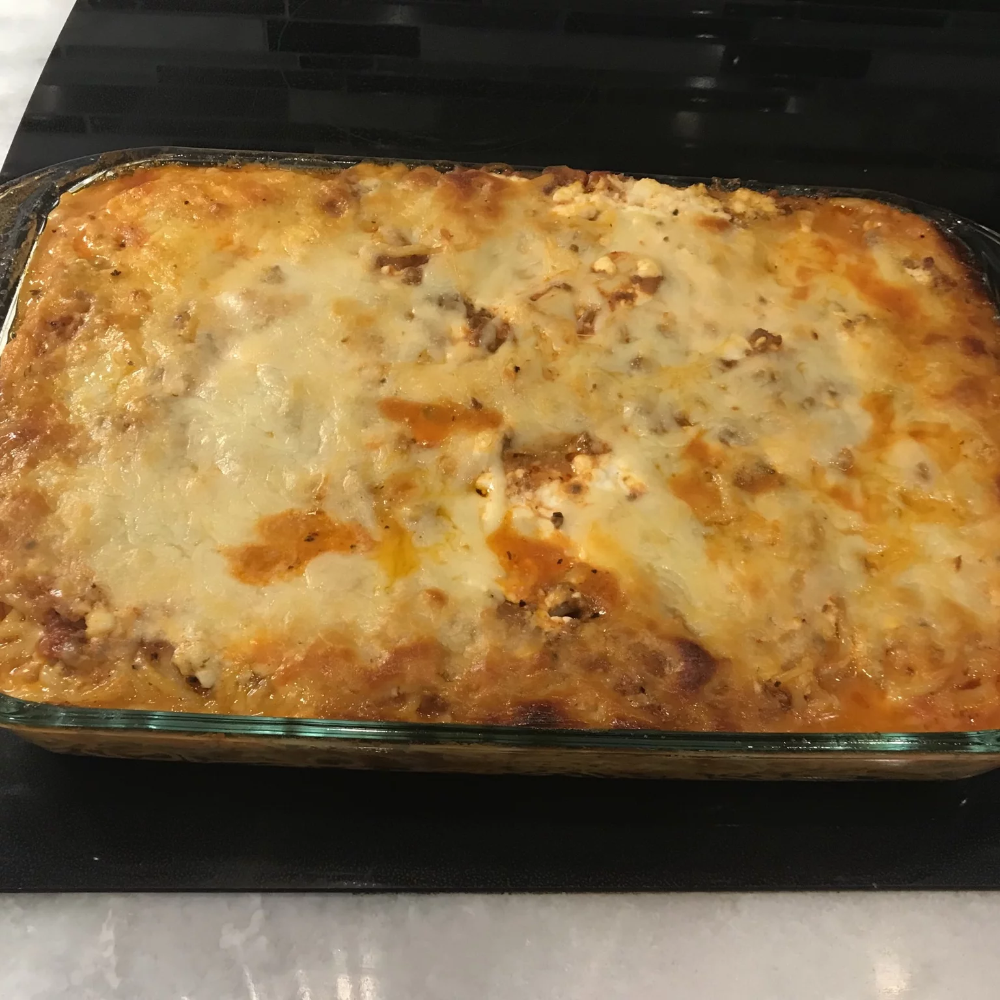

spahetti

Description
A comforting baked spaghetti casserole with plenty of melted cheese is the perfect dish for potlucks, family gatherings, or a week-night dinner
ingredients
- 1 package spaghetti
- 1 grounded beef
- 1 onion chopped
Steps
- Heat a large skillet over medium heat; cook and stir beef and onion until meat is browned and onions are soft and translucent, about 7 minutes. Drain. Stir in spaghetti sauce and seasoned salt.
- Bring a large pot of lightly salted water to a boil. Cook spaghetti in boiling water, stirring occasionally until cooked through but firm to the bite, about 12 minutes. Drain
- Whisk eggs, Parmesan cheese, and butter in a large bowl. Mix in spaghetti to egg mixture and toss to coat. Place half the spaghetti mixture into baking dish. Top with half the cottage cheese, mozzarella, and meat sauce. Repeat layers. Cover with aluminum foil